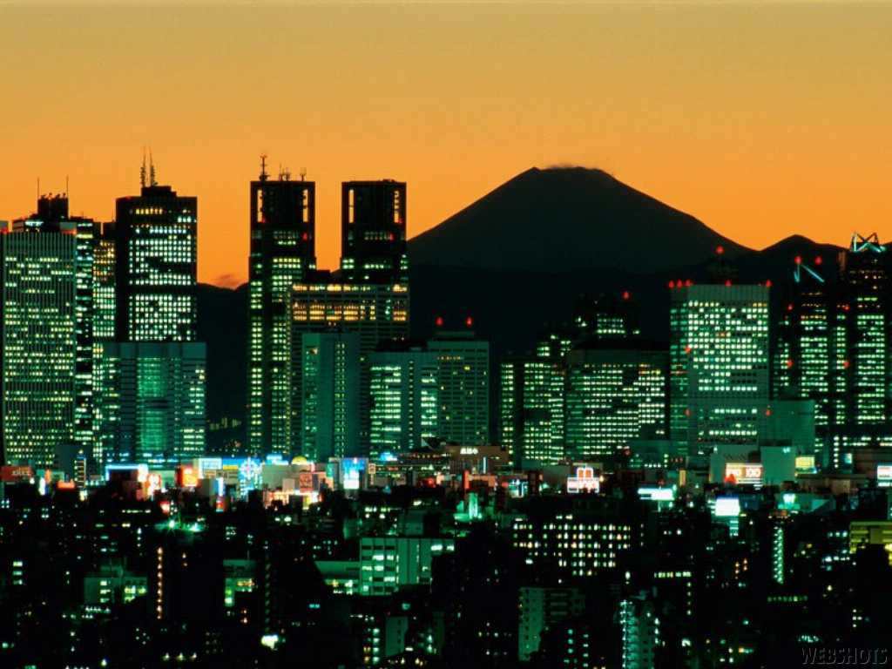
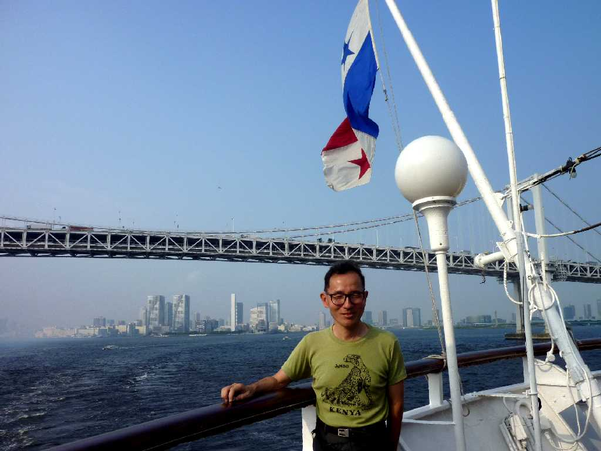
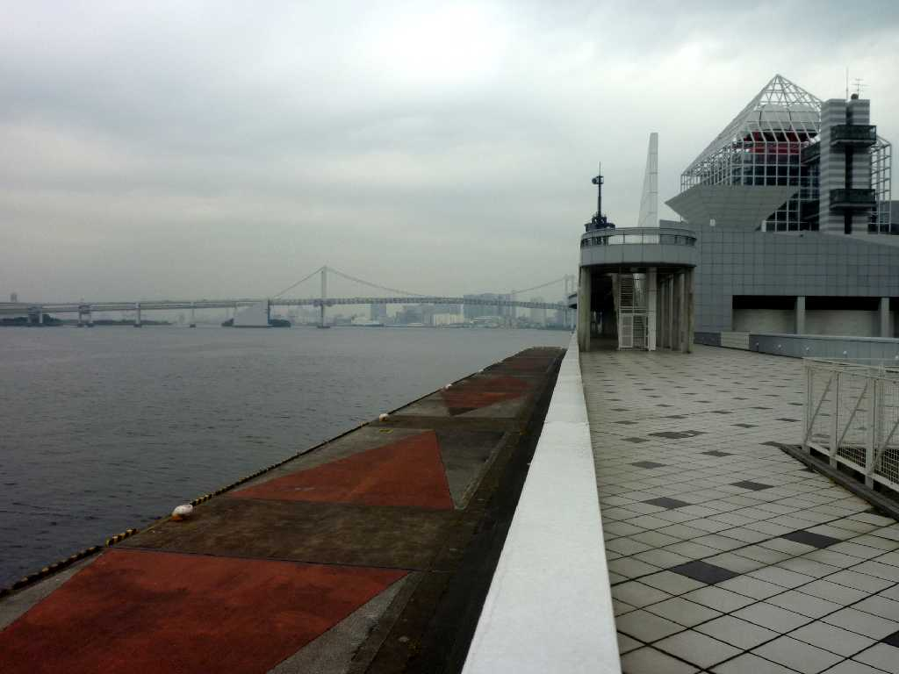
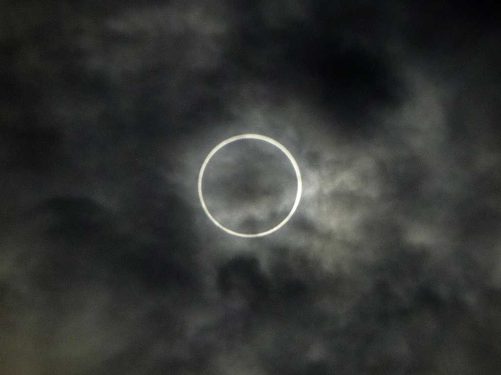
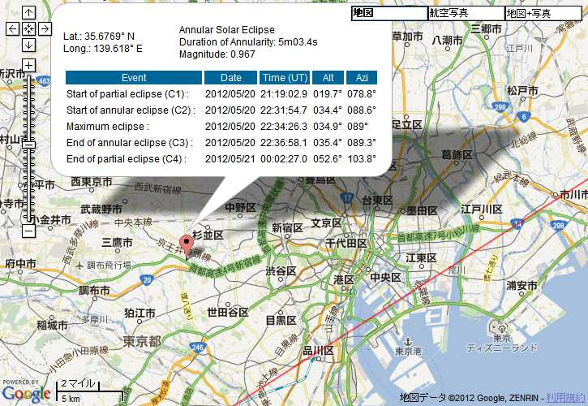

Night view Tôkyô 東京
HOME TOWN 私が生まれ育ち生活の拠点としている街


August 2 2010 SS Oceanic Rainbow Bridge in Tokyo Bay
２０１０年８月２日１６時８０日間世界一周クルーズ４７,０４０ｋｍにクルーズ船 SS Oceanic で出港 晴海埠頭からレインボーブリッジを潜り東京を離れる

October 20 2010 Harumi Port in Tokyo Bay
２０１０年１０月２０日１２時８０日間で４７,０４０ｋｍ航行し晴海埠頭で世界一周クルーズ完了

May 21 2012 7:34 Annular solar eclipse Suginami Tokyo
早朝の金環日食で暗くならず太陽を観ない限り周辺には変化が無かった
